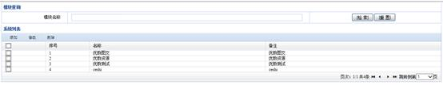
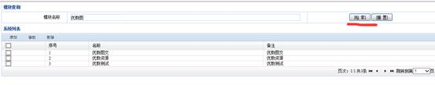

资源评价系统V2.0
用户使用手册
郑州威科姆科技
2012.06.28
修订历史记录
|
版本 |
*变化状态 |
说明 |
日期 |
修订者 |
|
2.0 |
A |
编写 |
2015.12.17 |
苌黄林、罗华森、董浩宇 |
|
|
|
|
|
|
|
|
|
|
|
|
|
|
|
|
|
|
|
|
|
|
|
|
*变化状态（A-添加，M-修改，D-删除）
目 录
为各平台提供公共的评价提交，投票提交服务，并提供可根据系统，及业务组织的响应管理功能。
灵活：具有栏目、信息属性定制功能，支持各种业务需要。
高效：具有静态化发布，全文索引功能，前端服务完全由静态HTML页面提供。
强大：包含了各种信息发布及管理所需的功能。
易用：提供多种可视化的管理功能，可视化的模版编辑功能即使不懂HTML语言也能够对网站模版进行栏目调整、数量修改等常用操作，可视化的文件管理功能使后台文件管理犹如windows操作般简单，可视化的文档编辑功能使居中、加粗、插入图片等多种编辑操作犹如使用office，人人都能进行。
安全：具有一系列流程及操作权限控制功能。
可靠：后台与前台各个服务独立，进一步提高应用高可靠性的设计。
。
上图为资源评价系统功能框图，分为2个部分，提供了前段接口及后端管理服务，前端为用户信息浏览服务部分，
后端为信息管理服务系统，可对所有站点及信息进行站点控制、信息发布、信息删除、栏目管理、风格效果调整、操作历史查看、访问计数统计、等各种管理操作。
操作系统：RedHat AS 6.2 x64
应用服务软件：jboss EAP 6.2
数据库服务软件：Mongodb3.0.3
后台管理部分主要是为整个系统的日常运营提供管理和支撑，保障系统安全无故障运行和以及保证提供信息的合法性。
可以通过地址：http://IP/auxsys/admin登录综合信息服务系统管理后台，系统默认用户是admin，默认密码也是admin。
投票定义管理包块对投票的增删改查操作，以及状态管理，投票记录的查看
1) 查看列表
点击投票管理进入投票列表界面
2) 添加
点击“添加”按钮
弹出投票编辑窗口，编辑投票信息后点击“保存”，提示保存结果后返回列表界面
点击增减投票项可以增加选项；
若想减少某一项，点击管理栏的删除即可
注意事项
填写投票信息时，投票标题，投票项ID，投票项标题为必填内容
同一投票内，投票项ID，投票项标题皆不可重复
投票标题不可重复
3) 修改
选择一条定义后，点击“修改”进入投票编辑页面，编辑完后点击保存即可保存，提示保存结果信息后返回列表页面
4) 批量删除
勾选要删除的投票定义，点击删除，点击确定即可（可多选）
删除投票定义后会删除对应的投票列表
5) 批量启用停用
勾选要停用或者启用的定义，点击停用，启用按钮即可（可多选）
6) 查询
输入查询名称，按照名称模糊查询
显示查询结果
状态管理是指管理投票的可用状态，选择停用则用户不可再继续投票。
投票的标题不可重复定义；
删除投票时会删除相应的投票结果，谨慎删除
应用管理是对应用的增删改查操作。
点击应用管理进入应用管理页面

1) 添加
点击添加按钮
填写应用信息，保存即可
2) 修改
选择一条应用信息后，点击修改按钮，
编辑应用后保存即可
3) 删除
勾选要删除的应用，点击删除按钮
4) 查询
输入应用名，点击查询

显示搜索结果
应用名称不可重复
关键字管理是对关键字的增删改查操作。
点击关键字管理按钮，进入关键字列表页面
1) 添加
点击添加按钮
填写关键字信息
2) 修改
选择要修改的记录，点击修改按钮（单选）
点击保存按钮，提示保存结果，返回列表页面
3) 删除
选择要删除的记录，点击删除（可多选）
4) 查询
输入要查询关键字，点击查询
显示查询结果
查询是按照名称模糊查询
关键词内容不可重复
评论管理提供按应用目录显示评论列表，并对评论进行查询、查看、审核、修改、删除操作。
1) 点击【评论管理】，进入应用列表页面，如下图所示：
2) 点击应用名或目录名，进入评论列表页面，如下图所示：
3) 评论列表显示主要的评论信息，其中，信息标题和评论内容超过长度会自动截取，光标放于上方会显示全部信息。
4) 可以根据信息标题、信息id、评论内容、评论状态、评论时间进行查询，信息标题、信息id、评论内容可以做模糊查询
5) 点击评论列表中信息标题可以查看该条评论的详细信息。
6) 选择状态为未审核的评论信息，点击列表上方的审核按钮可以对评论信息进行批量审核。
7) 选择需要修改的评论，则会弹出修改评论对话框，可以手动修改评论的状态和评论内容，这里一次只能选中一条评论。
8) 此处的删除为批量删除，若要删除评论，可选择任意评论进行删除。
状态：评论状态有两个值：已审，待审，这是系统自动判定的，判定依据为若提交到本系统的评论内容中包含关键字管理中维护的关键字则视该条评论为未审，需要人工来定是否审核通过，若不包含关键字则视该条评论为已审。
投票结果查看提供按应用目录及投票管理传递进来的投票id显示相应的投票结果列表，并对投票结果进行查询和按投票项结果值排序操作。
1) 点击【投票管理】――》显示投票列表――》选择某一条投票――》点击查看，进入应用列表页面，如下图所示：
2) 点击应用名或目录名，进入投票结果列表页面，如下图所示：
3) 投票结果列表显示主要的投票结果信息。
4) 可以根据信息标题、信息id、地区进行模糊匹配查询，可以通过排序项（即投票项）对投票结果列表按某投票项降序排列。
功能说明
用于管理系统功能模块。
操作步骤
1) 登录系统后进入系统管理-菜单管理。
2) 点击添加按钮，可打开模块添加窗口，录入对应属性。
3) 链接为模块菜单相对地址，级别用于控制用户权限。
4) 点击新建窗口中的保存，可添加新的模块。
5) 列表上勾选某一模块点击修改按钮，可修改模块信息。
6) 勾选需要删除的模块（可多选），点击删除按钮，可将所选的模块信息删除。
属性说明
模块名称：功能名称用于对应功能菜单展示时显示。
排序号：用于展示时排列菜单显示顺序。
级别：用于控制用户权限，当菜单级别小于或等于用户级别时显示当前菜单。
链接：用于配置用户点击相应功能菜单时，打开的功能页面地址。
备注：模块备注说明。
注意事项
1) 建议此功能仅对超级管理员开放。
2) 超管用户级别为1，菜单的级别应大于1。
3) 链接必须添加，否则对应的功能菜单用户点击后将无法正常打开功能页面。
用于管理设置用户信息及配置各个用户所具有角色的模块权限。
1) 登录系统后进入系统管理-用户管理，可以查看当前管理员用户列表。
2) 选择添加用户，可打开用户添加窗口，录入对应属性。
3) 账号不可重复，级别用于控制模块权限，1为超管权限可见所有菜单；默认为2，不可见菜单管理及用户管理功能。
4) 点击新建窗口中的保存，可添加新的账号,新建账号密码统一为123456。
5) 列表上勾选某一用户点击修改按钮，可修改用户信息。
6) 勾选需要删除的用户（可多选），点击删除按钮，可将所选的用户信息删除。
账号：用于登陆的用户唯一标识，不可重复，新建后不可修改。
排序号：用于控制用户列表的排列顺序，顺序为从小到大排列。
级别：用于控制用户的可见模块权限，当用户级别小于或等于菜单模块时，可见对应模块。
备注：用于用户列表上显示，标记额外的信息。
1) 用户列表按照序号正序显示。
2) 新建账户默认密码为123456。
3) 级别用于控制用户所具有的菜单权限，当级别小于或等于菜单级别时，菜单可见。
1) 处理性能
信息浏览支持10000用户同时在线，浏览前端信息服务页面响应时间不大于3秒。
后台管理单机环境能支持50用户的并发访问，浏览统计及日志页面时间不大于5秒(按50万记录计算)。
以上均可根据业务需要进行多服务器集群扩展，从而提高并发性能扩展。
2) 存储支持
单机系统支持50G业务数据存储，包括10G数据库数据存储，40G文件数据存储。多服务器环境视具体硬件级网络情况而定。
3) 可维护性
程序采用面向对象的设计，系统服务、后台管理各个模块都有运行日志，记录程序运行状态便于维护和异常跟踪。
4) 可扩展性
系统在前台服务、模版标签、操作日志、权限控制等多处采用模块化、接口化的处理方式，并具有业务模型、模块管理、等功能，具有强大的可扩展性。
5) 安全性
各模块功能及站点栏目，支持权限管理。各项主要操作均记录操作历史。信息、模版提供历史恢复功能。信息管理具有回收站功能，确保用户使用过程中的数据安全。
6) 实用性与易用性
本系统经过多个版本的用户反馈积累和重构，现在从结构设计到界面布局上都遵循重实际、讲实用、求实效，适应用户对内容管理的实际需求的宗旨。在及保证系统强大功能的同时又尽可能的优化用户的常用操作，贴近用户的操作习惯，易于用户上手和使用。